ポケモン最新作である『ポケットモンスターソード＆シールド』の最新情報をまとめています。
情報を逃した方や再確認したい方は参考にしてみてください。
バトル中に「なみのり」「ダイビング」を使用すると姿が変わります。
この状態のときに攻撃を受けると、咥えている魚を吐き出して相手に反撃します。


特性くだけるよろいは物理技を受けると、防御ランクが1段階下がり、素早さランクが2段階上がります。
| ポケモン名 | タイプ1 | タイプ2 | 特性 | 高さ | 重さ |
|---|---|---|---|---|---|
| ウッウ | ひこう | みず | うのミサイル | 0.8m | 18.0kg |
| ポットデス | ゴースト | / | くだけるよろい | 0.2m | 0.4kg |
品揃えが豊富になるそうです。アウターなども追加される予定で、幅広い着せ替えが楽しめそうです。
今作もヘアカットが可能で髪型、髪色の種類も豊富です。
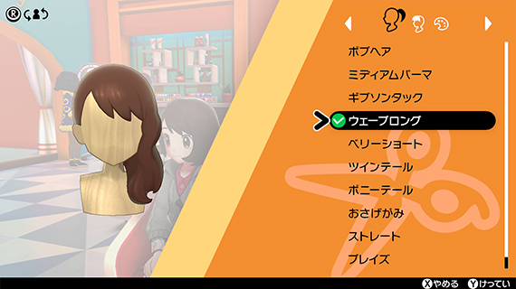 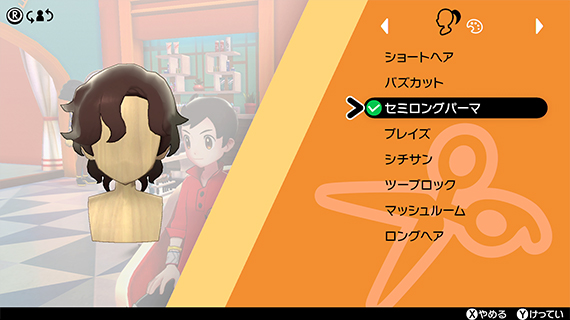メイクアップでは眉の太さを変えれたり、カラーコンタクトを付けたりできます。
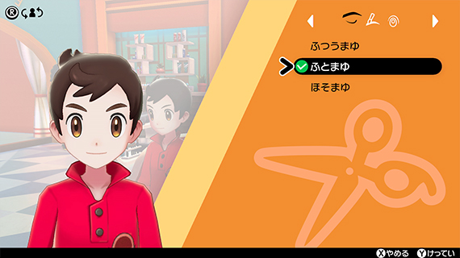 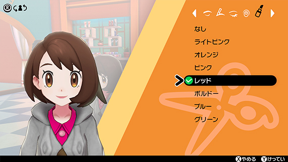交換相手がマッチして交換が終了するまでの間、冒険を続けながら交換を行えるようになるそうです。
＊インターネット通信を用いて他のプレイヤーと通信交換・対戦をする場合、Nintendo Switch Online（有料）への加入が必要です。
＊ローカル通信で遊ぶ場合は必要ありません。
手持ちのポケモンたちとふれあいや料理を楽しめます。
動画ではこのパートでマホイップの姿違いが見られました。
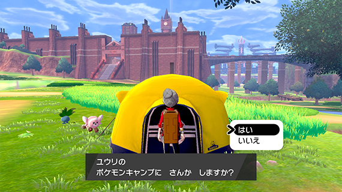 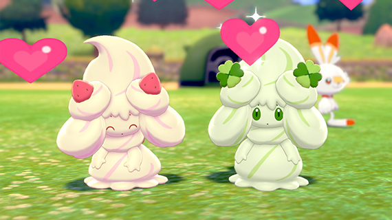ポケモンキャンプではガラル地方で大人気の料理カレーライスが作れます。
動画では食材や木の実を組み合わせ、団扇で火加減を調整する場面が見られました。
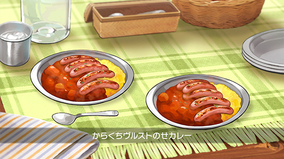 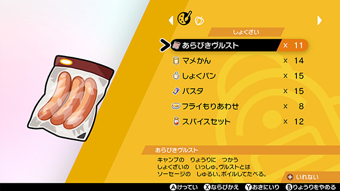 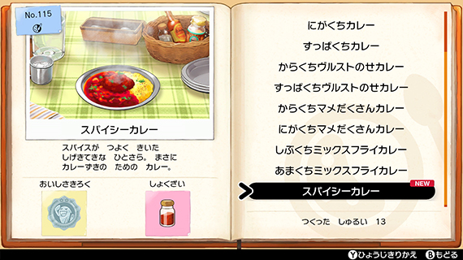料理したカレーはポケモンたちと食べることができ、カレー図鑑に登録されるようです。
ワイルドエリア内で通信機能を使うと他のプレイヤーのキャンプに参加できたり、他のプレイヤーを招待できるようです。
参加する際は、手持ちのポケモンを1匹だけ連れて行けるようです。
＊インターネット通信を用いて他のプレイヤーとキャンプで遊ぶ場合、Nintendo Switch Online（有料）への加入が必要です。
＊ローカル通信で遊ぶ場合は必要ありません
ガラル地方のトレーナーが自分のプロフィールを紹介するために持っているカードです。
ポケモンセンター内のロトミの機能【カードメーカー】でデザインをカスタマイズできます。
他のプレイヤーと通信対戦を行ったときや、リーグカードを交換したときに表示されます。
他の人からもらったリーグカードはアルバムに保存されます。
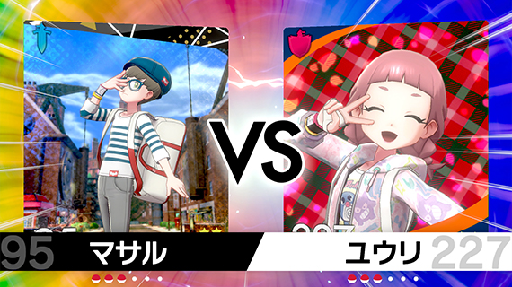 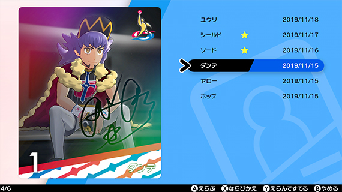リーグカードの背景やフレーム、表情やポーズも選んで編集できます。
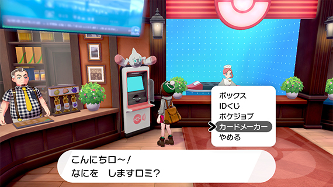 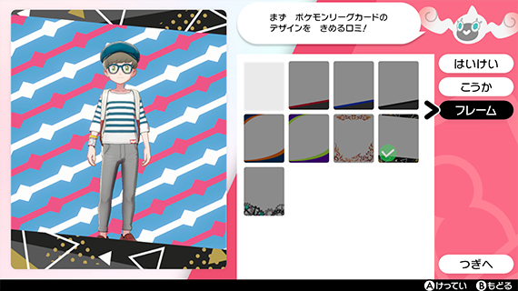 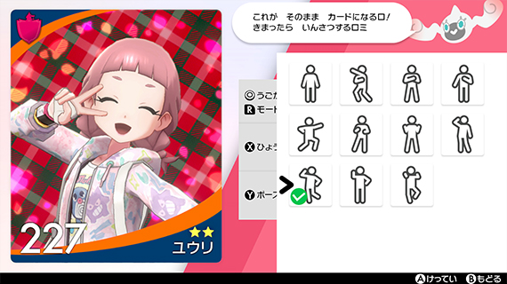